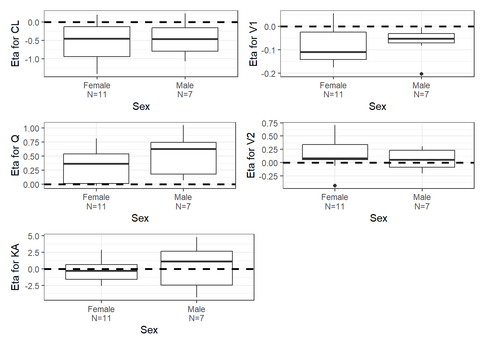
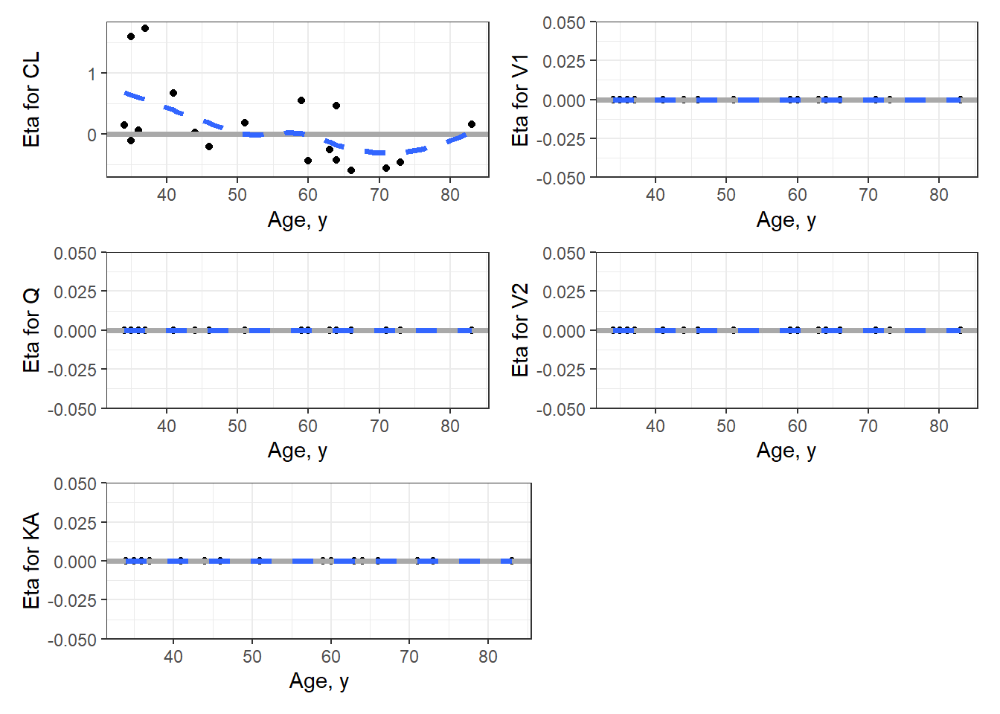

Pharmacokinetics of sufentanil after epidural administration
Authors
Pawel Wiczling
Agnieszka Bienert
Published
October 6, 2023
Introduction
Pharmacokinetics of sufentanil after epidural administration:
Code
library(pracma)library(bbr)library(dplyr)library(ggplot2)library(patchwork)library(mrgsolve)library(vpc)library(pmplots)library(scales)library(data.table)library(tidyverse)library(glue)library(whisker)library(here)library(pmtables)# library(mrgmisc)source("functions/resampling_functions.R") # from mrgmisc
Settings:
Code
data_dir <-"../data/derived"model_dir <-"../model/nonmem/basic"figure_dir <-"../deliv/figures"# user specific settingsoptions(bbr.bbi_exe_path ="C:/Users/pawel/AppData/Roaming/bbi/bbi.exe")bbi_init(.dir = model_dir, # the directory to create the bbi.yaml in.nonmem_dir ="C:/", # location of NONMEM installation.nonmem_version ="nm74g64", # default NONMEM version to use.bbi_args =list(mpi_exec_path ="C:/nm74g64/run/psexec",parafile ="C:/nm74g64/run/fpiwini8.pnm",parallel =TRUE,threads =4 ))
xdata %>%distinct(ID,.keep_all =TRUE) %>%mutate(SEX=case_when( SEX =="1"~"Male", SEX =="2"~"Female",.default =NA)) %>%select(ID, WT, AGE, SEX) %>% kableExtra::kable()
ID
WT
AGE
SEX
1001
90
44
Male
1002
80
71
Female
1003
63
36
Female
1004
71
59
Male
1005
60
37
Male
1006
73
64
Female
1007
84
60
Female
1008
64
35
Female
1011
71
64
Female
1014
56
41
Female
1015
83
51
Female
1016
76
83
Male
1017
96
46
Male
1018
59
34
Female
1019
46
66
Female
1021
57
63
Male
1022
45
35
Female
1023
70
73
Male
Run NONMEM using bbi
First model:
Code
mod1 <-new_model(file.path(model_dir, 1), .overwrite =TRUE)submit_model(mod1, .mode ="local")mod1 <- mod1 %>%add_tags("2 cmp disposition model (fixed), F=1, ABS: 2 cmp model")%>%add_tags("Eta for ka estimated, fixed for other to 0.1")mod1 <- mod1 %>%add_notes(" ")
Code
mod2 <-new_model(file.path(model_dir, 2), .overwrite =TRUE)submit_model(mod2, .mode ="local")mod2 <- mod2 %>%add_tags("2 cmp disposition model (fixed), F estimated, ABS: simple")%>%add_tags("Eta for ka estimated, fixed for other to 0.1")mod2 <- mod2 %>%add_notes(" ")
Warning in .f(.x[[i]], ...): pojawiły się wartości NA na skutek przekształcenia
Warning in .f(.x[[i]], ...): pojawiły się wartości NA na skutek przekształcenia
Warning in .f(.x[[i]], ...): pojawiły się wartości NA na skutek przekształcenia
Warning in .f(.x[[i]], ...): pojawiły się wartości NA na skutek przekształcenia
Warning in .f(.x[[i]], ...): pojawiły się wartości NA na skutek przekształcenia
idata <-distinct(join_df,ID,.keep_all =TRUE) idata<-idata %>%mutate(SEXC=case_when( SEX =="1"~"Male", SEX =="2"~"Female",.default =NA))etas <-c("ETA1//Eta for CL","ETA2//Eta for V1","ETA3//Eta for Q","ETA4//Eta for V2","ETA5//Eta for KA")p_cat<-eta_cat(idata, c("SEXC//Sex"), etas)p_cont1<-eta_cont(idata, c("AGE//Age, y"), etas)p_cont2<-eta_cont(idata, c("WT//Weight, kg"), etas)cov_sex<-(p_cat[[1]]+p_cat[[2]])/(p_cat[[3]]+p_cat[[4]])/(p_cat[[5]]+plot_spacer())cov_age<-(p_cont1[[1]]+p_cont1[[2]])/(p_cont1[[3]]+p_cont1[[4]])/(p_cont1[[5]]+plot_spacer())cov_wt <-(p_cont2[[1]]+p_cont2[[2]])/(p_cont2[[3]]+p_cont2[[4]])/(p_cont2[[5]]+plot_spacer())ggsave(paste0(figure_dir, "/model", basename(mod_to_plot$absolute_model_path), "/" ,"cov_sex" , ".png"),plot=cov_sex, width=12, height=10, dpi=600, units="cm")ggsave(paste0(figure_dir, "/model", basename(mod_to_plot$absolute_model_path), "/" ,"cov_age" , ".png"),plot=cov_age, width=12, height=10, dpi=600, units="cm")
`geom_smooth()` using formula = 'y ~ x'
`geom_smooth()` using formula = 'y ~ x'
`geom_smooth()` using formula = 'y ~ x'
`geom_smooth()` using formula = 'y ~ x'
`geom_smooth()` using formula = 'y ~ x'
`geom_smooth()` using formula = 'y ~ x'
`geom_smooth()` using formula = 'y ~ x'
`geom_smooth()` using formula = 'y ~ x'
`geom_smooth()` using formula = 'y ~ x'
`geom_smooth()` using formula = 'y ~ x'
Code
print(cov_sex)

Code
print(cov_age)
`geom_smooth()` using formula = 'y ~ x'
`geom_smooth()` using formula = 'y ~ x'
`geom_smooth()` using formula = 'y ~ x'
`geom_smooth()` using formula = 'y ~ x'
`geom_smooth()` using formula = 'y ~ x'

Code
print(cov_wt)
`geom_smooth()` using formula = 'y ~ x'
`geom_smooth()` using formula = 'y ~ x'
`geom_smooth()` using formula = 'y ~ x'
`geom_smooth()` using formula = 'y ~ x'
`geom_smooth()` using formula = 'y ~ x'